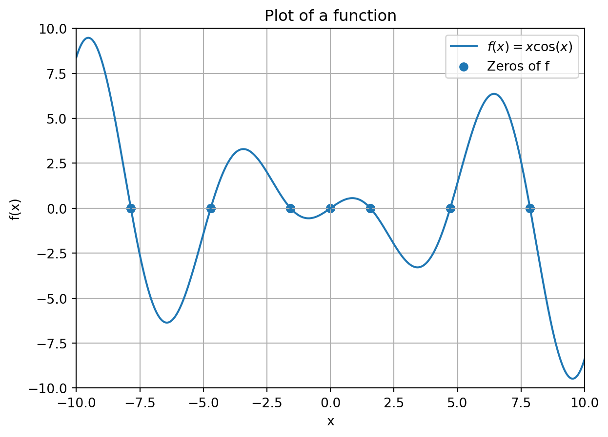
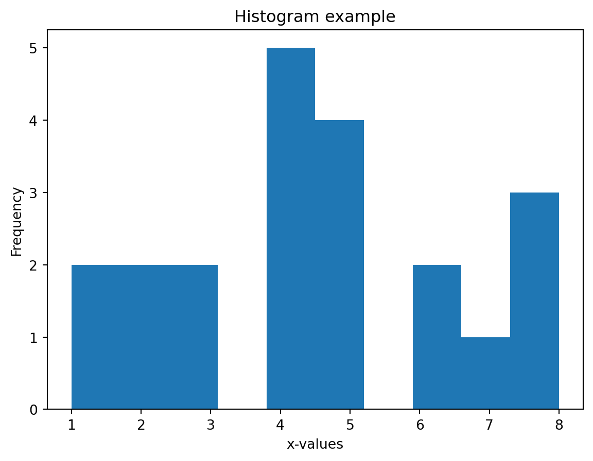
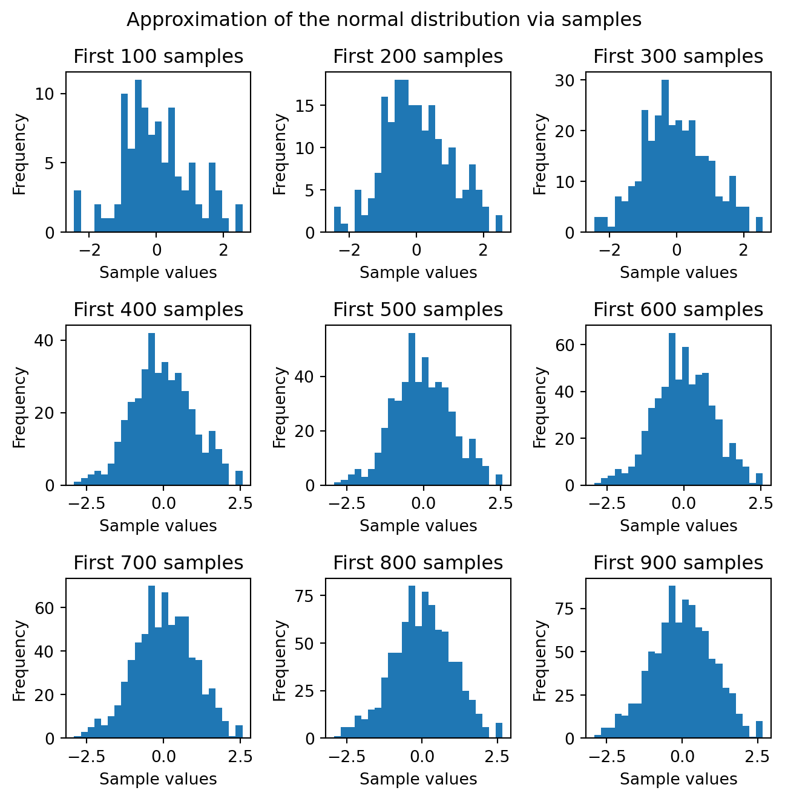
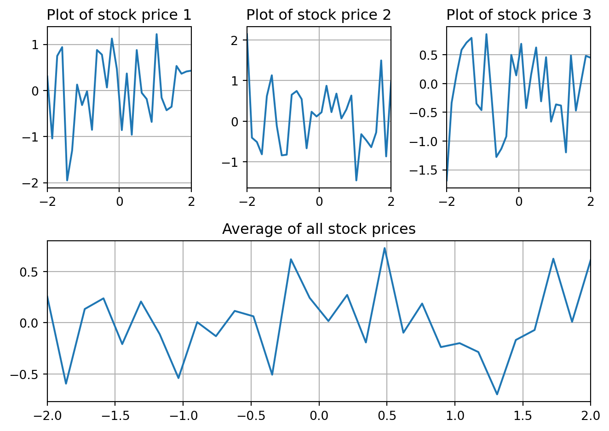
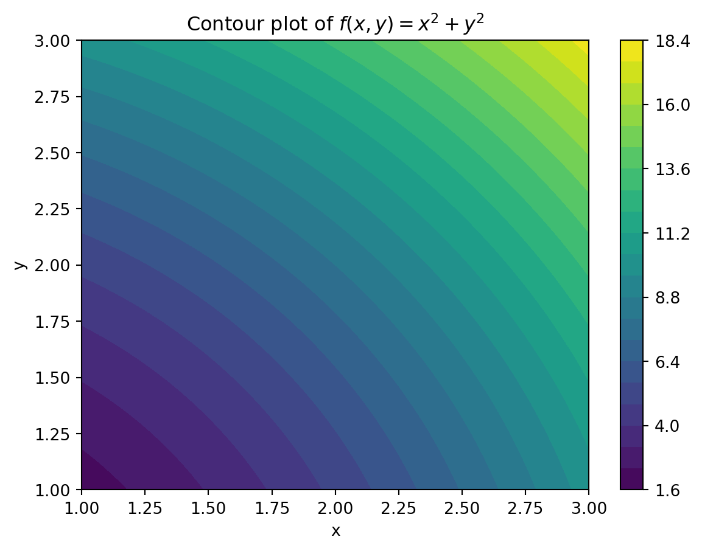

import numpy as np
import scipy.optimize as optimize
import matplotlib.pyplot as pltLecture 6: Section 7
Make sure to import NumPy, SciPy and Matplotlib to be able to complete all the exercises.
Question 1
Plot the function f(x) = x \cdot \cos(x) on the interval [-10,10] and indicate all the roots of this function with a dot.
To compute all the roots in the interval [-10,10] use your solution to Question 1 from the exercises corresponding to Lecture 5.
Your plot should look like this.

Question 2
For a one-dimensional array x, we can make a histogram of the values in x using plt.hist() as the next example illustrates. We can use the bins keyword argument to specify the number of bins into which the values are grouped.
x = np.array([1,1,4,2,6,5,4,8,8,8,7,6,5,4,3,4,5,3,4,2,5])
# Create figure
plt.figure()
# Create histogram
plt.hist(x,bins=10)
# Add labels and title
plt.xlabel("x-values")
plt.ylabel("Frequency")
plt.title("Histogram example")
# Show the plot
plt.show()
It is well known that if we draw more and more samples from a probability distribution, then the histogram of these samples approximates the probability density function of the distribution better and better, if the total area of the histogram is normalized to one. We will test this for the normal distribution, but without the normalization (you can normalize with the density keyword argument if you want to do that; see the documentation).
The following code generates an array samples with n = 900 samples from the Normal distribution with mean 0 and standard deviation 1. We will see more on sample generation in a later chapter of this course. For now, we will only need to work with the vector samples.
# Mean of the distribution
mean = 0
# Standard deviation of the distribution
std_dev = 1
# Generate random samples from normal distribution
n = 900
samples = np.random.normal(mean, std_dev, n) We will generate one figure containing nine subplots that will show that the more samples we put in the histogram, the more the histogram will look like a bell-shaped normal distribution curve.
To this end, create a figure using plt.subplots() with nine subplots where plot i=1,\dots,9 contains the first 100i samples of samples in a histogram with 25 bins. Avoid unnecessary repetition as much as possible.
Your figure should look like the one below. Note that because of the randomness involved in the sample generation, your histograms do not have to look exactly the same. What is important is that the figures (seem to) converge to the bell-shaped curve that the Normal distribution is known for.

Question 3
Write a function stock_prices that takes as input an m \times n two-dimensional array y and two numbers a and b. You can think of the data on every row i = 0,\dots,m-1 of y as the trajectory of a stock price that is measured at evenly spaced points in time a=x_0,\dots,x_{n-1}=b, that is, at the points in x = np.linspace(a,b,n).
If we use f_i to denote the price function of stock i, then the entries y_{ij} = f_i(x_j) for j = 0,\dots,n-1 represent the price of stock i and time x_j. We do not actually need to know the complete functions f_i(x) for i = 0,\dots,m-1; we are only interested in the given values at x_0,\dots,x_{n-1}. Have a look at the test input data below, where we have plotted these prices for three (ficticious) stocks.
The function stock_prices should create and display a figure that has subplots of all the functions f_i next to each other on the interval [a,b], plotted at the points x_0,\dots,x_{n-1}. Under these plots, in the same figure, there should be a plot of the pointwise average of the functions, i.e., the average stock price at every point in time, which is for j = 0,\dots,n-1 the function defined by
\bar{f}(x_j) = \frac{1}{m} \sum_{i=0}^{m-1} f_i(x_j),
where one should recall that m is the number of rows of the input array, i.e., the number of functions f_i.
The figure produced by your function should look like this. Here, too, the numerical values in the plots might be different because of the randomness in the data generation.
# Samples drawn from normal distribution, rounded to three decimal places
y = np.array([
[0.305, -1.040, 0.750, 0.941, -1.951, -1.302,
0.128, -0.316, -0.017, -0.853, 0.879, 0.778,
0.066, 1.127, 0.468, -0.859, 0.369, -0.959,
0.878, -0.050, -0.185, -0.681, 1.223, -0.155,
-0.428, -0.352, 0.532, 0.365, 0.413, 0.431],
[2.142, -0.406, -0.512, -0.814, 0.616, 1.129,
-0.114, -0.840, -0.824, 0.651, 0.743, 0.543,
-0.666, 0.232, 0.117, 0.219, 0.871, 0.224,
0.679, 0.068, 0.289, 0.631, -1.457, -0.320,
-0.470, -0.639, -0.275, 1.495, -0.866, 0.968],
[-1.683, -0.335, 0.163, 0.586, 0.711, 0.793,
-0.349, -0.462, 0.858, -0.191, -1.276, -1.133,
-0.919, 0.497, 0.142, 0.690, -0.427, 0.159,
0.626, -0.309, 0.457, -0.662, -0.363, -0.382,
-1.196, 0.487, -0.469, 0.012, 0.481, 0.447]
])
a = -2
b = 2
# Plot the requested figure
stock_prices(y, a, b)
Question 4
It is not always possible to use the matrices X and Y generated by mgrid directly for visualization of bivariate functions. For example, suppose that the function f : \mathbb{R}^2 \rightarrow \mathbb{R} is defined by taking as input an array of shape (1,2) containing two elements.
def f(x):
return x[:,0]**2 + x[:,1]**2The Python implementation of f is vectorized in the sense that if we input a k \times 2 array, then it computes the function value for each of the k rows, with two elements each.
For plotting f using mgrid, based on the implementation above, the idea is to take its output matrices X and Y, and use them to create a two-dimensional array that contains each grid point as a row. Next, we will compute the function values and store them in a one-dimensional array that is then finally shaped back into the correct grid dimensions so that the resulting array corresponds to the Z matrix used in the explanation of plotting with mgrid in Sectoin 7.3.
- Write a function
grid_listthat takes as input matrices X and Y with the same shape. It should output all the two-dimensional points [X[i,j], Y[i,j]] as the rows of an array. Do this by reshaping (see Section 3.6) the matrices X and Y in combination with stacking.
Your function should give the following output on the given input.
a = 3
b = 5.1
step = 0.2
X, Y = np.mgrid[a:b:step,a:b:step]
print(grid_list(X,Y))[[3. 3. ]
[3. 3.2]
[3. 3.4]
[3. 3.6]
[3. 3.8]
[3. 4. ]
[3. 4.2]
[3. 4.4]
[3. 4.6]
[3. 4.8]
[3. 5. ]
[3.2 3. ]
[3.2 3.2]
[3.2 3.4]
[3.2 3.6]
[3.2 3.8]
[3.2 4. ]
[3.2 4.2]
[3.2 4.4]
[3.2 4.6]
[3.2 4.8]
[3.2 5. ]
[3.4 3. ]
[3.4 3.2]
[3.4 3.4]
[3.4 3.6]
[3.4 3.8]
[3.4 4. ]
[3.4 4.2]
[3.4 4.4]
[3.4 4.6]
[3.4 4.8]
[3.4 5. ]
[3.6 3. ]
[3.6 3.2]
[3.6 3.4]
[3.6 3.6]
[3.6 3.8]
[3.6 4. ]
[3.6 4.2]
[3.6 4.4]
[3.6 4.6]
[3.6 4.8]
[3.6 5. ]
[3.8 3. ]
[3.8 3.2]
[3.8 3.4]
[3.8 3.6]
[3.8 3.8]
[3.8 4. ]
[3.8 4.2]
[3.8 4.4]
[3.8 4.6]
[3.8 4.8]
[3.8 5. ]
[4. 3. ]
[4. 3.2]
[4. 3.4]
[4. 3.6]
[4. 3.8]
[4. 4. ]
[4. 4.2]
[4. 4.4]
[4. 4.6]
[4. 4.8]
[4. 5. ]
[4.2 3. ]
[4.2 3.2]
[4.2 3.4]
[4.2 3.6]
[4.2 3.8]
[4.2 4. ]
[4.2 4.2]
[4.2 4.4]
[4.2 4.6]
[4.2 4.8]
[4.2 5. ]
[4.4 3. ]
[4.4 3.2]
[4.4 3.4]
[4.4 3.6]
[4.4 3.8]
[4.4 4. ]
[4.4 4.2]
[4.4 4.4]
[4.4 4.6]
[4.4 4.8]
[4.4 5. ]
[4.6 3. ]
[4.6 3.2]
[4.6 3.4]
[4.6 3.6]
[4.6 3.8]
[4.6 4. ]
[4.6 4.2]
[4.6 4.4]
[4.6 4.6]
[4.6 4.8]
[4.6 5. ]
[4.8 3. ]
[4.8 3.2]
[4.8 3.4]
[4.8 3.6]
[4.8 3.8]
[4.8 4. ]
[4.8 4.2]
[4.8 4.4]
[4.8 4.6]
[4.8 4.8]
[4.8 5. ]
[5. 3. ]
[5. 3.2]
[5. 3.4]
[5. 3.6]
[5. 3.8]
[5. 4. ]
[5. 4.2]
[5. 4.4]
[5. 4.6]
[5. 4.8]
[5. 5. ]]- Make a contour plot of the function f (as defined in this exercise) using
plt.contourf()with thelevelskeyword argument equal to 25 on the rectangular grid [1,3] \times [1,3] with discretization step size 0.01.
Do this by computing the function values f(X[i,j],Y[i,j]) of every grid point (X[i,j],Y[i,j]) with the help ofgrid_list()andf()on the desired grid, and then reshaping the one-dimensional function value array into a two-dimensional array Z again so that entry (i,j) of Z corresponds to X[i,j]^2 + Y[i,j]^2.
Your plot should look like this.
